测量员的工具箱
测量工程小程序，手机里的专业计算器
作为一名在土木工程一线摸爬滚打多年的测量员，我深知在工地上随时可能遇到各种计算需求——坐标放样、导线平差、曲线要素计算、超欠挖判定……没有电脑在身边时，一个手机小程序就能解决大问题。今天就把我亲手开发的「测量员的工具箱」完整介绍给大家，它目前集成了多款专业工具，涵盖测量、工程计算、单位换算、材料计算等方方面面。
一句话总结：一个微信小程序，装下你工作需要的所有测量计算工具，随时随地掏出手机就能算。
打开小程序，首页就是清爽的工具网格，每个工具都有专属图标和简介。
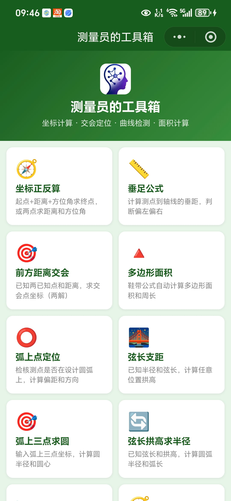
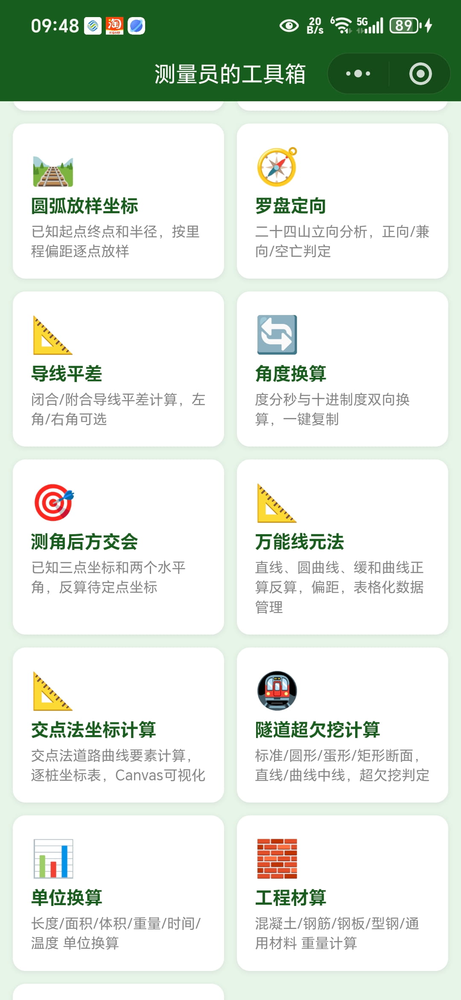
1. 坐标正反算
测量员最基础也最常用的计算。正算：已知起点、距离、方位角求终点坐标；反算：已知两点坐标求距离和方位角。支持度分秒输入，结果包含 ΔX/ΔY，自动显示在 Canvas 绘图上。
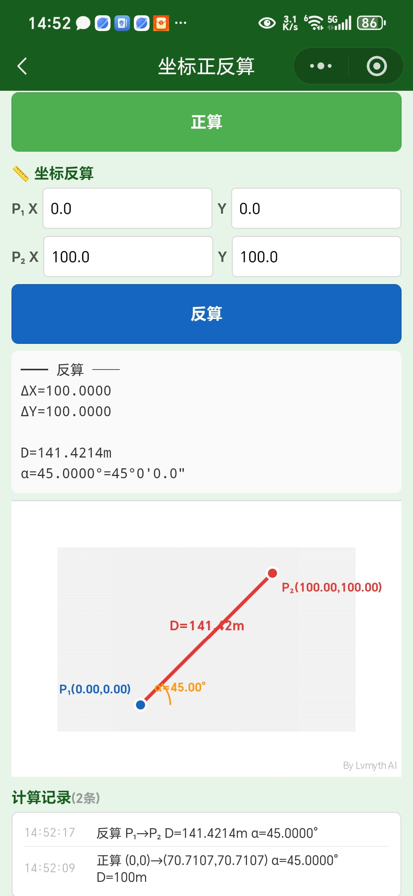
2. 垂足公式
计算测点到轴线的垂足坐标和垂距，自动判断测点偏左还是偏右。支持可视化绘图，红线代表垂线，绿点标注垂足位置。
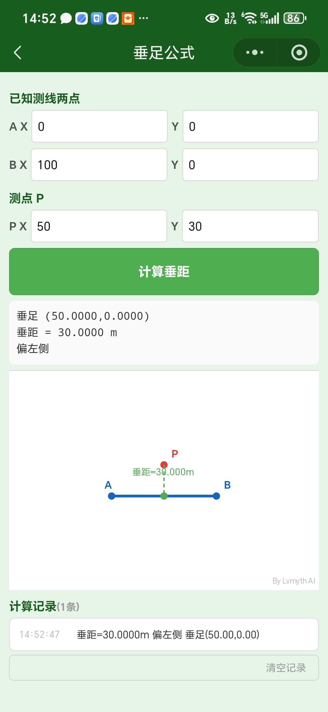
3. 前方距离交会
已知两个已知点坐标和到待测点的距离，交会计算待测点坐标。通常有两个解（交会在 AB 两侧），小程序会同时给出两个坐标结果。
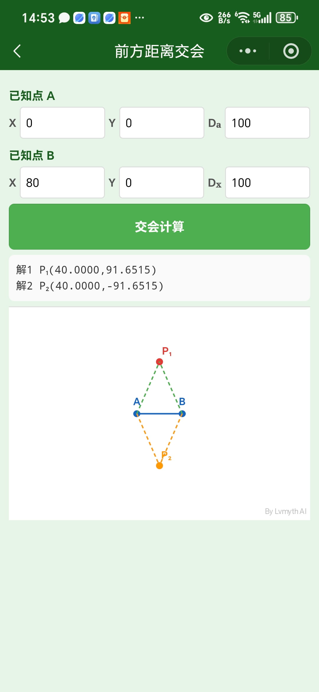
4. 多边形面积
用「鞋带公式」自动计算多边形面积和周长。支持任意数量的顶点，可随时添加或删除点，结果同步显示在 Canvas 图形上。
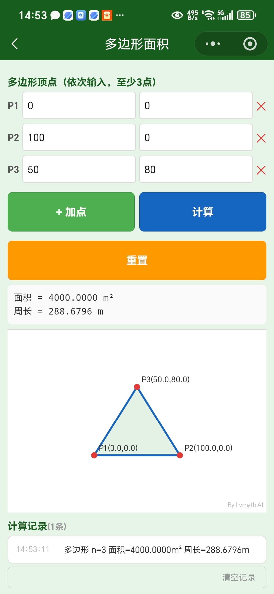
5. 弧上点定位
检核测点是否在设计圆弧上，计算测点到圆心的距离，自动判断「在弧上」「在弧内」「在弧外」并给出偏距。
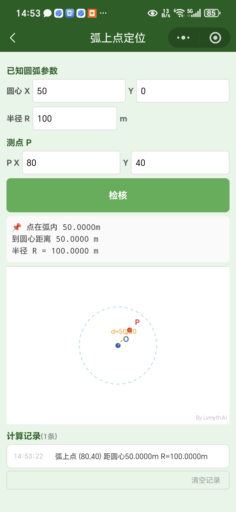
6. 弦长支距
已知圆弧半径和弦长，计算任意弦上位置的拱高。自动给出中点拱高、圆心角、弧长，Canvas 可视化绘制圆弧。
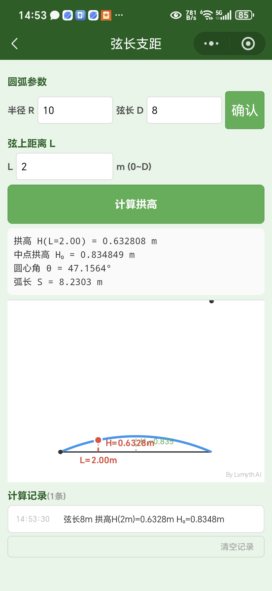
7. 弧上三点求圆
输入弧上任意三点坐标，反算圆半径和圆心坐标。自动检测三点是否共线，Canvas 显示圆弧和圆心。
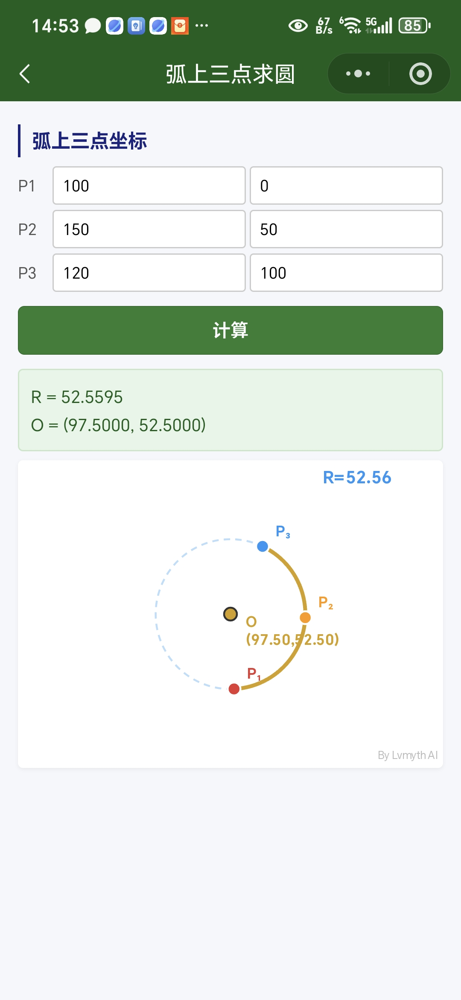
8. 弦长拱高求半径
已知弦长和拱高，反算圆弧半径、圆心角和弧长。还会给出矩高比（B/D），方便判断曲线是否合理。
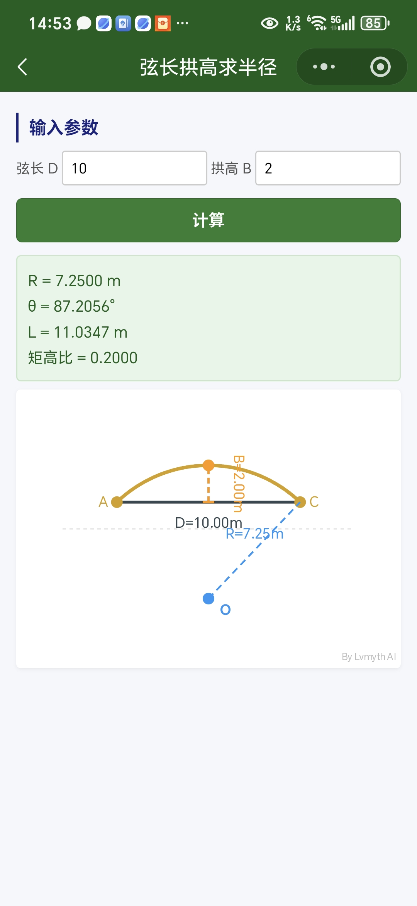
9. 圆弧放样坐标
已知圆弧起点、终点和半径，先确认基线（计算弧长、圆心、切线方位），然后输入任意里程 L 和偏距 K，计算该位置的放样坐标 N/E。支持左转/右转切换。
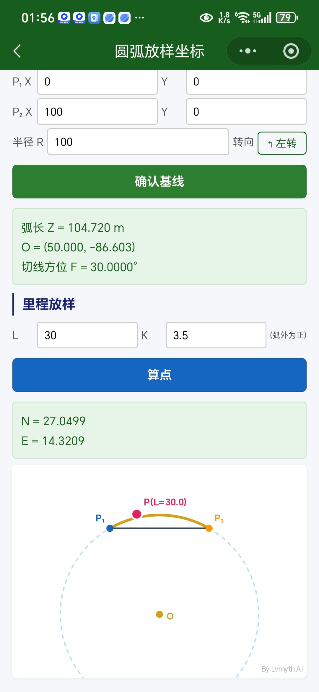
10. 导线平差
闭合/附合导线平差计算，支持左角/右角选择。输入各测站角度和距离，自动计算方位角闭合差、坐标增量、改正后坐标，输出平差结果表格。还有演示数据，一键填入测试。
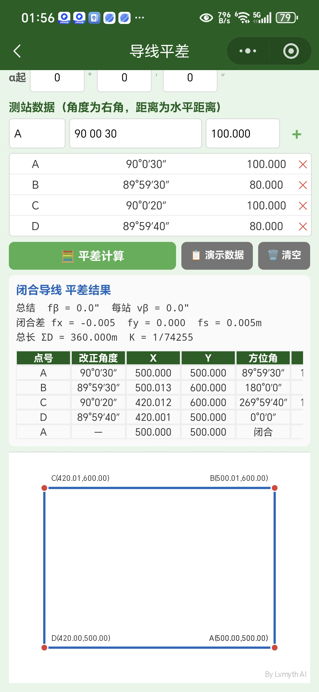
11. 测角后方交会
已知三个控制点坐标和两个水平观测角，反算待测点 P 的坐标。提供两个预设案例，方便快速验证。Canvas 绘制三个圆和交会点。
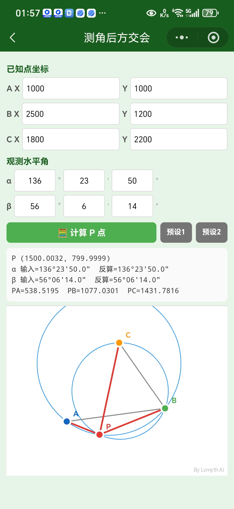
12. 万能线元法
支持直线、圆曲线、缓和曲线的正算/反算/偏距。用表格管理线元数据，可导入导出 CSV，Canvas 可视化整条线路。适合高速公路、铁路等长距离线形计算。
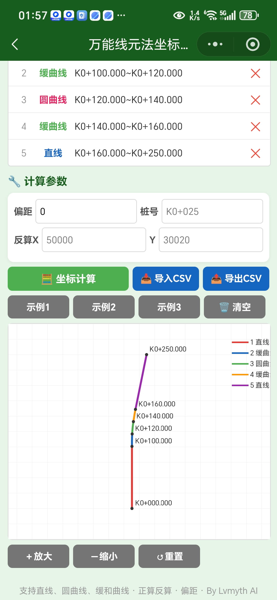
13. 交点法坐标计算
交点法道路曲线要素计算，输入交点里程、转角、半径、缓和曲线长，自动计算曲线总长、切线长、外矢距等全部要素，输出逐桩坐标表。Canvas 显示曲线全貌。
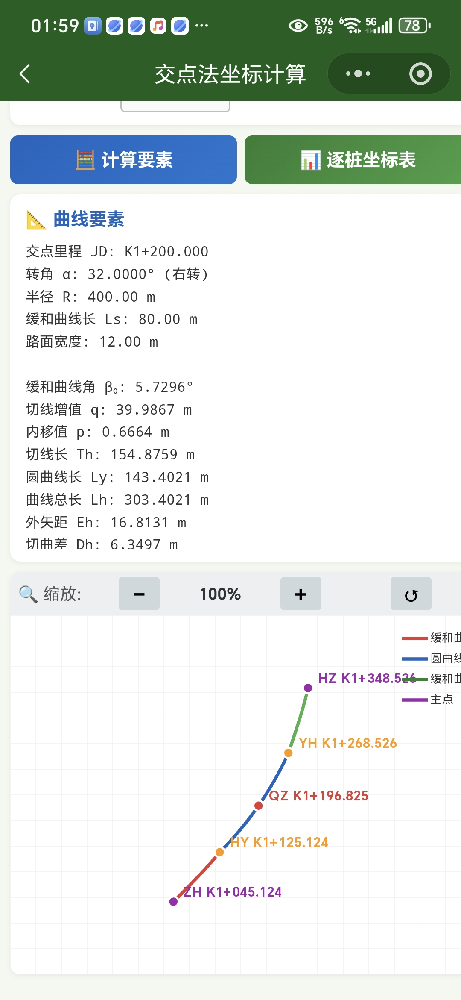
14. 隧道超欠挖计算
支持标准马蹄形、圆形、蛋形、矩形四种断面，可配置直线/曲线中线。输入实测点坐标，自动判定每个点的超挖/欠挖状态，给出径向差和净空差。Canvas 断面图一目了然。
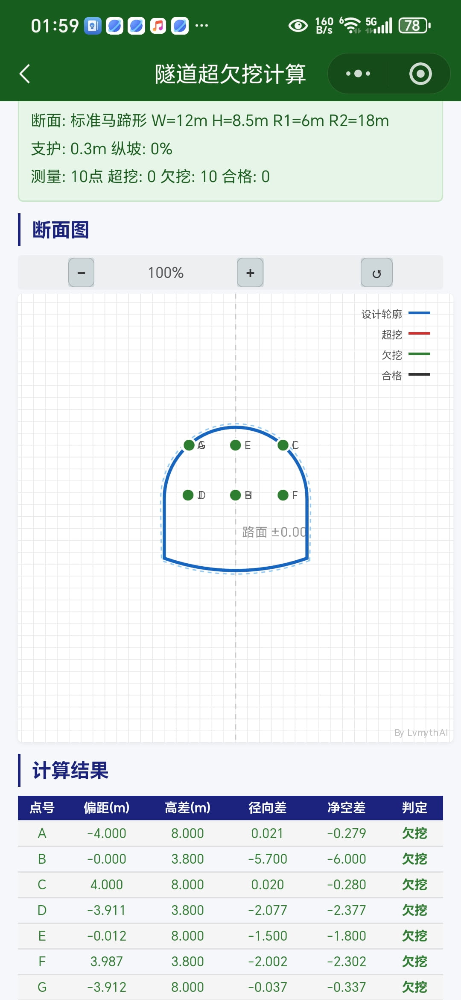
除了上述 14 个测量核心工具，还有 7 个实用辅助工具：
- 罗盘定向：二十四山立向分析，正向/兼向/空亡判定
- 角度换算：度分秒 ↔ 十进制度，一键复制
- 单位换算：长度/面积/体积/重量/时间/温度，6 大类 + 换算记录
- 工程材算：混凝土/钢筋/钢板/型钢/通用材料，56 种材料重量计算
- 施工日志：每日施工日志记录，模板/搜索/复制，本地化存储
- 坐标转换：四参数/高斯正反算/换带计算，多种椭球
后面会陆续增加实用工具。
每个工具都保持了一致的设计语言：绿色/蓝色主按钮、白色卡片、圆角输入框、Canvas 可视化。结果区域清晰展示计算结果，底部带时间戳的计算记录方便回溯。

微信扫码，即刻体验
开发背景：这个工具箱最初是我在 2025 年做的一个纯 HTML 网页工具集，后来为了在微信上更方便使用，移植成了微信小程序。所有工具的计算逻辑经过大量实测数据验证，力求专业准确。如果你在使用过程中发现任何问题，欢迎随时反馈。
除了微信小程序，这些工具也打包成了 网页版，在电脑上打开浏览器就能用，数据互通。